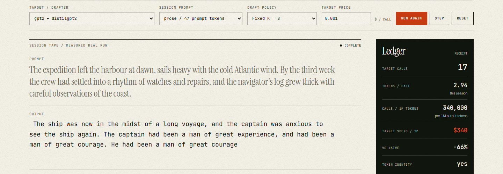

sdecode
5.69× tokens per target call.
Six words per slow step, instead of one.
A measured draft/verify harness for real models: a smaller drafter proposes, the target verifies a batch, and every lane is checked token-for-token against the naive target. The receipt keeps the wins and the losses.
- TARGET / DRAFTER
- gpt2 / distilgpt2
- DRAFTER COST c
- 0.63
- BEST LANE
- fixed K=8
- TOKENS / CALL
- 5.69×
- IDENTITY
- 100% token match
- ARTIFACTS
- app · film · ledger
Negative result included: adaptive K averaged 4.16× on this pair; both lanes stay in the receipt.
sdecode / recorded runAPP

TOKENS / CALL5.69×
TARGET CALLS10.7 avg
MATCH100%